|
Platform Changes
|
| Custom splash screens |
API is now in place to provide custom splash screens using
SWT. You can use the new org.eclipse.osgi.service.runnable.StartupMonitor
API to update the splash screen as the platform is being started.
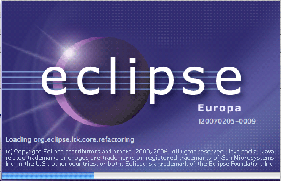 |
IDE application moved to new plug-in |
The portion of the org.eclipse.ui.ide plug-in that defines the
application has been moved into a new plug-in: org.eclipse.ui.ide.application.
This allows people writing their own RCP application to use existing views or APIs
defined by org.eclipse.ui.ide without having a dependency on the application.
|
Advanced tooltips |
JFace now supports tooltips that supply a
Composite for more complex tooltips. See org.eclipse.jface.window.Tooltip.

|
Widget-independent tree and table viewers |
A new abstract class AbstractTableViewer has been introduced,
making it possible to create subclasses that work on table widgets other than SWT's
Table. More methods on AbstractTreeViewer have been made
accessible to subclasses for the same reason. |
Per-column label providers, improved editing support |
AbstractTableViewer and AbstractTreeViewer now inherit
from a new base class ColumnViewer. A new abstraction for columns in viewers
has been introduced, making it possible to use a separate label provider for each column.
After creating a viewer, create appropriate viewer column objects (TableViewerColumn
or TreeViewerColumn) and call setLabelProvider on the column
object rather than the viewer itself. The new column abstraction also makes it easier to
set up an editable table or tree - see ViewerColumn.setEditingSupport(),
and to add keyboard navigation to editable tables or trees - see
TableViewerEditor.create() and TreeViewerEditor.create().
Code examples can be found on the JFace snippets page.
|
Custom tooltips for tree and table cells |
TreeViewer and TableViewer now support custom
tooltips on a per cell basis. See org.eclipse.jface.viewers.CellLabelProvider.
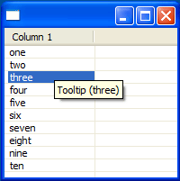
|
Data binding |
Data binding supports automatic synchronization between UI state and model
state and drastically reduces the amount of listener code required to implement common
UIs. The data binding API was made public in 3.3, and the existing single plug-in was
split into three to separate the core framework (org.eclipse.core.databinding) from code
that implements binding to SWT and JFace (org.eclipse.jface.databinding) and code that
binds to JavaBeans-style models (org.eclipse.core.databinding.beans). See the data binding wiki page
for more information. |
Status handling |
The new org.eclipse.ui.statushandlers package introduces
a mechanism for reporting and handling problems in the UI. Plug-ins can report
their problems through StatusManager, along with a hint about how
the problem should be handled. Eclipse applications and products can configure
how problems reported via this API are displayed to the end user. |
OSGi R4.1 |
The Equinox Framework implements all the new features defined in the
OSGi R4.1 specification. The most noteworthy change is the standardization of the
lazy activation policy. |
New Application Model |
The Eclipse application model now implements
the Application Admin Service from the OSGi specification. The net result
is a more flexible application container. For example, applications can
now be specified to allow more than one to run at a time. The lifecycle
of an application has also been improved to allow applications to be properly
shut down if the framework is shut down unexpectedly.
Eclipse applications can now implement org.eclipse.equinox.app.IApplication
to take full advantage of the new application model. See the org.eclipse.core.runtime.applications
extension point for more details on the options that can be specified
for application extensions. |
Equinox launcher |
The native Eclipse launcher has been rewritten
to use JNI calls as much as possible. The Java VM will be started in-process
using the JNI Invocation API unless the -vm argument points directly to
a Java launcher.
Among other advantages, this change allows for SWT widgets to be used
in the splash screen. As well, the splash screen can appear much earlier
if the product is set up properly. |
Equinox HTTP service |
The Jetty-based implementation of the OSGi HTTP
service has been added to the Platform SDK along with the bundles that
provide JSP and extension registry support. Help is now using this service
instead of Apache Tomcat. |
Support for Launching Equinox in Application Servers |
The Equinox servlet bridge allows the launching of OSGi based web applications
in existing applications servers.This support provides full integration with other
Equinox services and existing bundles and is tested for compatibility with major
server implementations. |
Orbit project created |
The Eclipse Orbit project was created to be a home for third party libraries being
consumed and bundled by Eclipse projects. Application developers can find many
useful Apache and other libraries in Orbit, ready to use. Note that Orbit can only
host libraries that have been IP reviewed and approved by the Eclipse Foundation. |
Platform proxy settings |
The platform now has a common place for configuring HTTP/Socks proxies.
The new org.eclipse.core.net plug-in has API for accessing, storing,
and monitoring changes to proxy settings. |
|
JSch SSH2 Client Support |
The platform provides API which allows SSH2 related
preference settings to be forwarded to the JSch SSH2 library (com.jcraft.jsch)
when making SSH2 connections. The new org.eclipse.jsch.core
plug-in provides this API |
Contribute columns to vertical ruler |
A new extension point, org.eclipse.ui.workbench.texteditor.rulerColumns
allows the contribution of columns to the vertical ruler of any text editor.
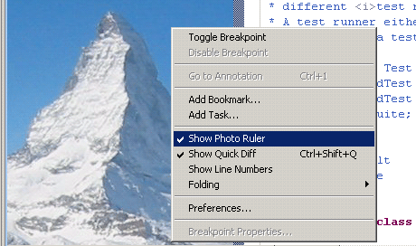 |
Extensible hyperlink detection
|
Clients can use the org.eclipse.ui.workbench.texteditor.hyperlinkDetectors extension
point to add their own hyperlink detectors and can enable their viewers using the
corresponding methods in the source viewer configuration along with the
org.eclipse.ui.workbench.texteditor.hyperlinkDetectorTargets
extension point.
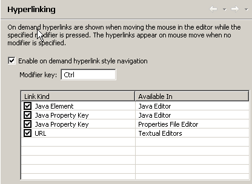
|
Mixed mode launch APIs and more |
The debug platform's launch API now supports
mixed mode launching. For example, an ISV could contribute a launcher to
profile and debug an application at the same time. See enhancements to
the launchDelegates and launchConfgurationTypes extension
points.
ISVs can also contribute one or more tabs to existing tab groups in
the launch dialog to extend existing launch types with new function.
For example, a profiling tool could provide a tab to configure profile
options for Java applications. See the new extension point launchConfigurationTabs.
The platform also allows more than one toolset to exist for launching
the same kind of application. For example, two profilers could exist
for Java applications and the user would be prompted to choose which
profiler to use. |
Debug context API |
The debug platform has new API to access the
active debug context. A debug context represents the active state of a
program being debugged and drives the enabled state of debug actions (step,
terminate, etc.), as well as source lookup, visible variables, and watch
expression values. A set of classes and interfaces have been added to the
new package org.eclipse.debug.ui.contexts allowing clients
to listen to and drive the active debug context. |
Debug command API |
Debug commands represent common operations implemented
by debuggers - for example, step over, suspend, resume, and terminate.
The debug platform has added API allowing debuggers to provide custom implementations
of the operations by implementing the debug command interfaces. See the
new package org.eclipse.debug.ui.commands. |
Pluggable detail panes |
API has been added to the debug platform
allowing custom detail panes to be contributed to the Variables view.
Clients may use any SWT control to render custom details for their variables.
A context menu allows users to choose between available detail panes
for each variable. See the new extension point org.eclipse.debug.ui.detailPaneFactories. |
Remote help content |
Packaging a comprehensive set of help documentation
with a product can often significantly increase its download size. To alleviate
this, Help now allows you to host your documentation remotely on an infocenter,
and will display the remote contents alongside any locally installed content
you may have, giving you significant savings on initial download size.
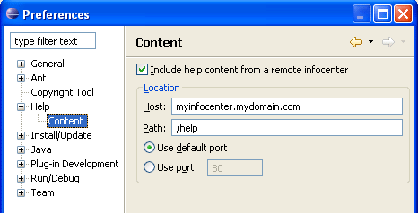
|
Plug in help in any format |
Teams are no longer restricted to the specific
XML formats defined by the Help system, such as table of contents XML,
keyword index XML, etc. A new set
of API has been added to enable Java code to generate the content at
runtime. This allows teams who work with other formats, such as DITA,
to write an adapter plug-in that will perform the conversion, thus avoiding
a build-time conversion and allowing them to ship documentation in the
format of their choice. |
Improved dynamic user assistance content |
Dynamic content is now fully supported for all
user assistance XML documents, which means you can filter, include, extend
or replace sections of documents for any of the user assistance document
types. These include:
- Welcome pages (XML or XHTML) and contributions
- Help XHTML topics, table of contents, keyword index,
and context-sensitive help
- Cheat sheets, both simple and composite
You can also define your own filter criteria and use boolean operators
to achieve greater flexibility with filtering by using XML expressions in
any of the documents listed above. |
Added control of help/welcome content ordering |
The help table of contents and welcome items
will now be arranged in a more meaningful order when multiple products
and documentation sets are installed. All available products' preferences
will be taken into consideration, and products may now use an external
XML file similar to welcome's to specify their preferred order and visibility
of entries in the table of contents. |
Link to anything from context-sensitive help |
You can now add arbitrary command links in context-sensitive
help, allowing applications to perform any operation. For example, you
can link to a related cheat sheet:
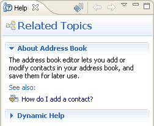 |
Compare supports File Buffers |
Compare now has support for file buffers which means that a Compare
editor can share the underlying file buffer with other types of editors
(e.g. Java editor) such that changes made in one editor will be immediately
reflected in the other. More information on this can be found in the
Implementing a Content Viewer,
Implementing a structure viewer
and Advanced compare techniques sections |
Apply Patch API |
Compare now has support for opening the Apply Patch wizard programmatically
and also provides a low level API for manipulating patches. More information on this can be found in the
Advanced compare techniques section |
|
SWT Changes
|
Printing support added on GTK+ |
Printing support has been added to SWT for GTK+. You must be running with
GTK+ 2.10 or newer in order to print. |
New DateTime control |
Your users can now enter dates or times using
the new DateTime control. You can see the DateTime control in action on
the DateTime tab of the SWT control example.
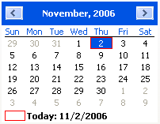
|
Option to print line numbers added to StyledText |
When printing a StyledText widget, line numbers
can now be printed by setting the StyledTextPrintOptions.printLineNumbers
field to true. |
Text SEARCH style |
On platforms that have this concept, Text controls
can now have the look and feel of a search field with the SWT.SEARCH style.
Adding the SWT.CANCEL style gives the user a way to cancel
the search. This example
snippet created the Text control shown in the snapshot
below.
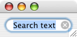 |
System tray support added on Mac OS X |
Icons placed on the system tray will now appear in the Mac OS X status bar.
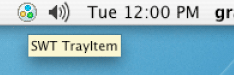 |
Writing PNGs now supported |
Images can now be written to disk in PNG format
(example
snippet). |
Browser profiles on GTK+ and linux-motif |
The Browser widget now uses profiles on GTK+ and linux-motif. This fixes
many previous shortcomings, including the inability to display https pages, not
rendering visited links properly, and not caching visited pages. |
Browser support added on PowerPC |
Browser support has been added for the PowerPC architecture (GTK+). |
Native GTK Combo box |
You now get a native combo box when running with GTK+ version 2.4 or newer.
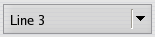 |
Faster JPEG/PNG image loading |
JPEG images now load from 30 to 70 percent faster,
and PNG images load 2 to 3 times faster, depending on the image. |
Color cursors on Mac OS X and GTK |
You can now create color cursors on Mac OS X and GTK.
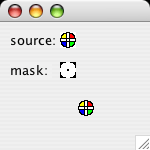
This example
snippet created the cursor pictured above. |
New graphics line drawing capabilities |
SWT graphics now supports much finer control
of line attributes, including fractional line widths, dashed line offsets,
and miter limits. These capabilities are provided by the new LineAttributes class
and the new GC methods get/setLineAttributes.
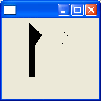
(This example
snippet created the above snapshot.) |
SWT libraries automatically found |
The SWT libraries are now loaded from the SWT
jar when an SWT application is launched. Within Eclipse, you can just use
the Run As > Java Application menu item and the libraries will
be found. When launching from the command line, you no longer need to specify
the SWT library path. |
Mozilla everywhere |
Mozilla can now be used as the underlying browser
control on Windows and OS X, providing that you have XULRunner installed
and registered. To use this just create your Browser with the SWT.MOZILLA style.
This example
snippet created the snapshot below.
|
DragDetect API |
Custom widget implementers can now use Control.setDragDetect() to
disable the default drag detection and Control.dragDetect() to
implement their own. For example, a custom list control could start dragging
only when an item is selected. Typed events for drag detection are now
available (see DragDetectListener and DragDetectEvent).
This example
snippet created the snapshot shown below.
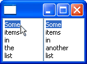 |
Drag over and drag under effects |
Custom drag over and drag under effects can
now be implemented for any control. Custom widget implementers can provide
feedback that is appropriate for their control by subclassing DragSourceEffect and DropTargetEffect.
The default effects for the Table, Tree and StyledText controls
have been changed to use these classes (see TreeDragSourceEffect, TreeDropTargetEffect and
the corresponding classes for these controls). This StyledText example
snippet created the snapshot shown below.
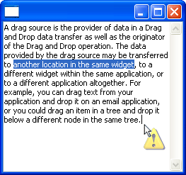 |
JavaXPCOM support |
SWT.MOZILLA-style Browsers can
now be programmed to via JavaXPCOM. This requires that XULRunner 1.8.1.2
or newer be installed.
This example
snippet created the snapshot below.
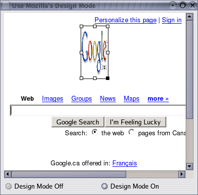 |
OLEExample and OLE improvements |
The new OLEExample showcases SWT OLE (win32)
support. We now do a better job of hosting OLE documents in SWT. For example,
OleClientSite in-place activation scrollbars work correctly.
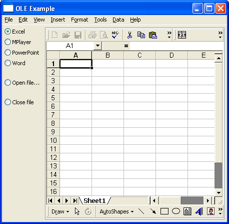 |
Reparenting support on Mac OSX |
SWT on Mac OSX now supports widget reparenting. |
Advanced graphics supports mirroring |
Advanced graphics now renders correctly in RTL
mode. The snapshot below shows bidirectional text drawn using transforms
and patterns on a Canvas.
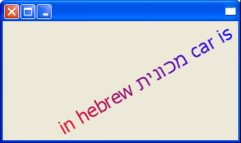 |
SWT graphics showcase |
Try out the new SWT Graphics example, which showcases
some of SWT's graphics capabilities. This example is included with the other
example plug-ins.
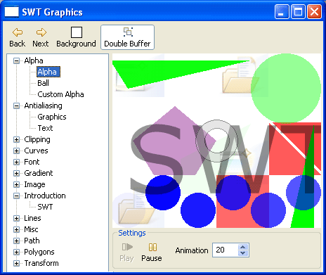 |